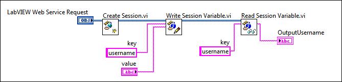

|
Note��For more information about concepts in this topic, refer to the Web services introduction and tutorial. LabVIEW Web services are available only in the LabVIEW Full Development System and the LabVIEW Professional Development System. |
An HTTP session is a collection of the HTTP requests made between a web client and a Web service. Use HTTP sessions to save data such as authentication credentials or variables across multiple HTTP requests from a single web client. For example, a user can enter a username at the start of an HTTP session and the Web service can save that data for subsequent HTTP requests.
|
Note��Web services store persistent data as session variables within HTTP cookies on the client system. You must enable cookies within the web client, such as a browser, to use HTTP sessions. |
Use the following VIs to create and destroy an HTTP session; write, read, and delete session variables; and check if a current session exists for a particular web client:
For example, you can create a session variable that represents a username. A client transmits a value for the username in the initial HTTP request. Using a session variable, the HTTP method VI saves a cookie on the client system. The client then can make HTTP requests without having to re-enter that value. Without an HTTP session and session variables, the username value resets each time the client makes an HTTP request.
Use cookies to enable the client to continue a specific HTTP session for multiple HTTP requests when using a web browser or other client that supports cookies. You can generate a session ID cookie when you use the Create Session VI to create a new HTTP session. Use the Get Session ID Cookie VI to use cookies to resume a specific HTTP session.
The following figure shows code from an HTTP method VI that establishes an HTTP session, writes a session variable username, and accepts a value from the web client. The Read Session Variable VI then reads the value of username, which you can use within the HTTP method VI across subsequent HTTP requests.
